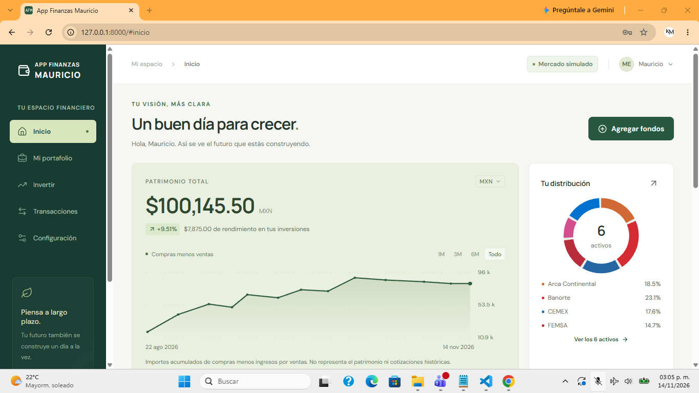

Aplicación web · En desarrollo
App Finanzas Mauricio
Versión web del proyecto iOS · App de finanzas. Estoy desarrollando una versión mejorada para el navegador de la aplicación que creé en Swift como proyecto final de mi clase de aplicaciones en iOS. Es una app inspirada en GBM para simular la compra y venta de acciones de la Bolsa Mexicana de Valores.
Capturas y funcionamiento
Galería del proyecto
Selecciona un módulo para filtrar las fotos. Enfoca el visor o una miniatura y usa las flechas izquierda y derecha para navegar; Inicio y Fin seleccionan la primera y la última foto.

Fotos versión web del proyecto
Versión web: panel principal con mercado simulado
Contacto
¿Hablamos?
Si mi perfil encaja con tu equipo o tienes un proyecto en mente, puedes escribirme.